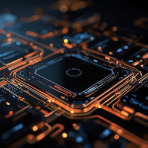

Meu nome é Lucas, tenho 20 anos, moro em Osasco, São Paulo, apaixonado por tecnologia da informação como um todo e busco desenvolver cada vez mais os meus conhecimentos nessa área, principalmente na programação.
Iniciei essa jornada na programação por meio da recomendação de um amigo que me fez conhecer o Curso em Vídeo, que está sendo extremamente importante para mim, pois os conteúdos passados nesse canal educacional são de extrema valia e o professor é extremamente didático nas explicações.
Aprendi sobre UX E IHC (Experiência do Usuário e Interação Humano Computador), Matemática Computacional Aplicada, Sistemas Operacionais, Python (até estruturas de repetição while), HTML (Até as hierarquias de título: h1, h2, h3, h4, h5 e h6), lógica de programação utilizando o visualg.
Posteriormente no curso de HTML5 e CSS3, estudarei o CSS e o Javascript, além de uma outra linguagem de programação como o C#, pois desejo aprender a criar jogos e ser um desenvolvedor independente e um desenvolvedor de sites também, pois esse é o meu sonho.

Imagem Representativa sobre Tecnologia
Emoji de Cowboy: 🤠
Emoji de um rosto com um monoóculos: 🧐
Emoji de um alien: 👽
Euro: €
Yen: ¥
Libra Esterlina: £
Nome do Personagem: Darth Vader
Darth Vader, um dos vilões mais amados dos cinemas e o mais amado em Star Wars ou Guerra nas Estrelas, é um sith aliado ao império, visando destruir os jedi e reprimir a resistência imperial dos remanescentes da república, é temido por todos e os seus adversários tremem diante a sua presença aterradora.
Darth Vader, antes de ser um sith, era um jedi chamado Anakin Skywalker, cuja pessoa era o destinado a trazer o Equilíbrio para a Força, sendo assim, ele era o Escolhido para trazer o equilíbrio entre os jedi e os sith como um todo.
Nome do Personagem: Elliot Alderson
Elliot Alderson, o protagonista da série, é um personagem da série Mr Robot, cuja jornada é muito ligada a tecnologia, se tratando de um hacker que quer revolucionar um mundo, porém, a sua jornada para salvar o mundo demonstra muito mais nuances, como a sua relação com Mr Robot, o deuteragonista da série, demonstra ser muito maior do que aparenta ser, e, com isso, a série desenvolve essa relação que afeta todos os atos que ocorrem ao longo da série por meio do desenvolvimento de tal dinâmica como um todo.
(ALERTA DE SPOILER) Na quarta e última temporada da série, Mr Robot se revela ser Edward Alderson, o pai do Elliot.
Nome do Personagem: Otto Apocalypse
Otto Apocalypse, considerado o melhor personagem de Honkai Impact 3rd, é um antagonista cujo foco é salvar a sua amada, Kallen Kaslana, não importando qual o custo de seus sacrifícios, ele não se importa se deseja ser visto como alguém mau e sem coração, tudo o que ele faz durante a trama é para salvar a única pessoa que o amou de verdade.
Otto Apocalypse possui uma neta e sucessora de Schicksal, Theresa Apocalypse.
Mãos se cumprimentando: 🤝
Pessoas se abraçando: 🫂
Mãos Levantadas: 🙌
Mãos em posição de oração: 🙏
Mão fazendo símbolo de paz: ✌
Mão batendo palmas: 👏
Mão de joinha: 👍
Mão fazendo símbolo de OK: 👌
Mão fazendo uma separação entre os dedos bem no meio: 🖖
Rosto com duas estrelas nos olhos: 🤩
O motivo de eu gostar de todos esses emojis é porque eu utilizo muito eles no meu cotidiano e possuem um significado especial para mim.
Euro: €
Dólar: $
Libra Esterlina: £
Setas: ⇛, ⇚, ⇑ e ⇓
Trademark: ™
Copyright: ©
Marca Registrada: ®

Imagem simbolizando como é o dia a dia da tecnologia na vida das pessoas.
Imagem que demonstra um pouco de como é o universo da programação como um todo.
Imagem representando o conflito entre Anakin Skywalker e seu lado sombrio, Darth Vader, simbolizando um dos conflitos principais para a história desse personagem tão admirável.
Python teve o seu nome estabelecido por meio de um programa de TV, onde o criador do Python, Guido Van Rossum, decidiu criar o nome para o Python em homenagem a um programa de TV que ele gostava muito, o seu nome era Monty Python's Flying Circus.
O HTML foi criado para aprimorar um funcionamento de um site como um todo, ainda no início da era da Internet nas décadas de 1980, cujo consórcio dono dessa tecnologia é a W3C, World Wide Web Consorcium.
O nome do criador do primeiro computador foi o Alan Turing, considerado o pai dos computadores, cujo objetivo da criação de tal dispositivo era para contextos de guerra.
Dessa maneira, estou iniciando a minha jornada no mundo da programação e desenvolvimento web, onde eu tenho o objetivo de aprender cada vez mais sobre as respectivas áreas citadas.